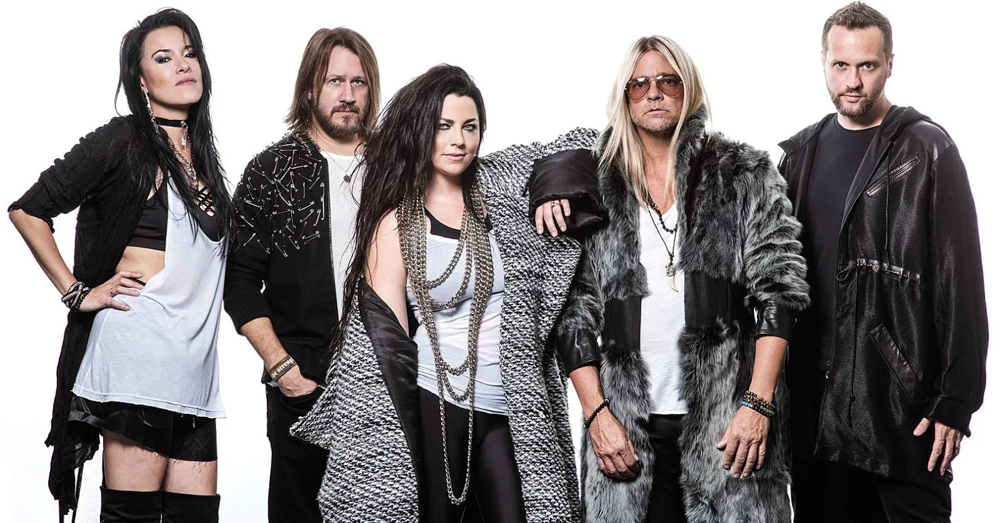
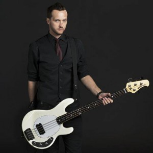
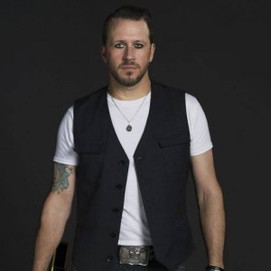
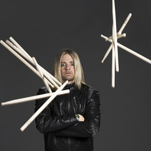

Sobre a Banda
Evanescence é uma banda americana de Metal alternativo formada em 1994 na cidade de Little Rock, Arkansas, Estados Unidos pela vocalista e pianista Amy Lee. A formação original ainda contava com o guitarrista Ben Moody. Atualmente o grupo tem cinco integrantes, sendo que Moody já não está mais envolvido.
O Evanescence era popular na região de Little Rock, tocando em bares e casas noturnas. Os primeiros materiais da banda são os EPs: Evanescence EP e Sound Asleep EP, no qual todas as cópias foram vendidas e são extremamente raras em todo o mundo. Porém a banda só ganhou fama e reconhecimento mundial no ano de 2003 com o álbum Fallen, que recebeu sete vezes disco de platina pela RIAA, além de vender mais de 17 milhões de cópias em todo o mundo, ajudando a banda a vencer dois Grammys.
O álbum ao vivo Anywhere But Home foi gravado em Paris na França permitindo sucesso internacional da banda, principalmente na Europa. Durante 2003 o single "Bring Me to Life" permaneceu por semanas no topo das paradas musicais, tornando-se o maior hit da banda até então. A canção ainda entrou para a trilha sonora do filme Daredevil. Em outubro de 2003, o guitarrista Ben Moody anuncia sua saída do Evanescence em meio a turnê Fallen Tour, alegando diferenças criativas com os outros membros da banda. O segundo álbum de estúdio, The Open Door trouxe de volta a banda após dois anos de hiato. O disco vendeu cerca de 6 milhões de cópias em todo o mundo. Após a turnê The Open Door Tour em 2007, o guitarrista John LeCompt e o bateirista Rocky Gray deixam a banda. Com isso restam apenas Lee e Balsamo, já que Will Boyd também deixara a banda em meados de 2006.
O terceiro disco auto-intitulado da banda Evanescence debutou em primeiro lugar na Billboard 200 por cerca de 130 mil cópias na primeira semana de vendas. Foram lançados até então três singles: "What You Want", "My Heart Is Broken" e "Lost in Paradise". Atualmente a banda está em turnê e conta com cinco integrantes: Amy Lee, Terry Balsamo, Tim McCord, Will Hunt e Troy McLawhorn
MEMBROS
- Amy Lee
- Jen Majura
-  Tim McCord
-  Troy McLawhorn
-  Will Hunt